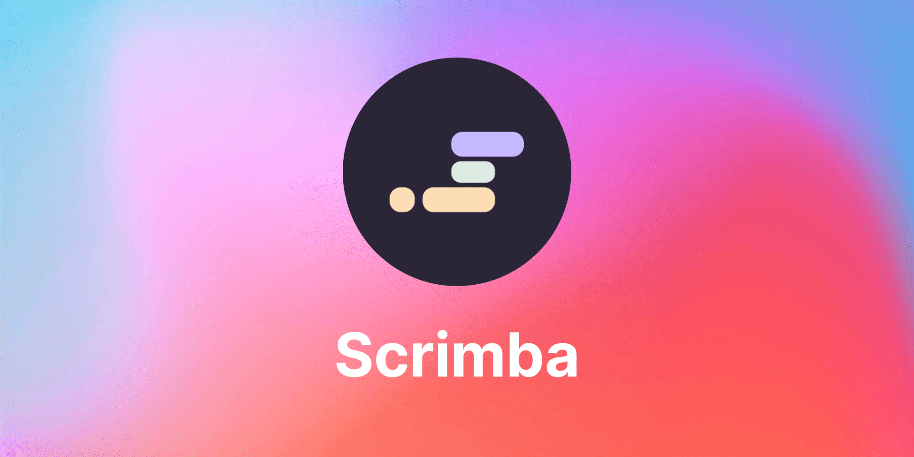

My Journey as a Devoloper
When I decided to dive into the world of web development, I felt overwhelmed by the sheer number of resources available. Should I go for YouTube tutorials, online courses, or bootcamps? After some research and recommendations, I stumbled upon Scrimba—and it just clicked for me.
Why I Chose Scrimba Over Other Platforms
I explored other platforms before settling on Scrimba. Some of them had good video tutorials, but they lacked interactivity. Others required too much upfront commitment, like expensive subscriptions or lengthy bootcamps. Scrimba hit the sweet spot for me:
- I could learn at my own pace.
- It was engaging and hands-on.
- The instructors explained concepts clearly and provided real-world examples.
My Goals When Starting
When I started, my primary goal was to learn enough to build my own websites and eventually start freelancing. I wanted a platform that could guide me from beginner to confident developer, and Scrimba's structured learning path gave me a clear roadmap.